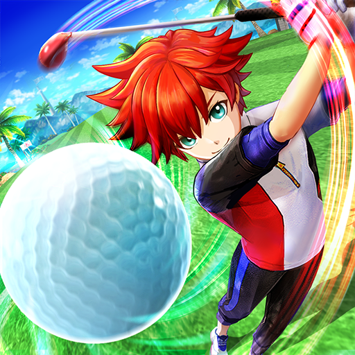

Bola Golf

Dikutip Dari Wikipedia :
Bola golf adalah bola khusus yang dirancang untuk digunakan dalam permainan golf.
Di bawah aturan golf, bola golf memiliki massa tidak lebih dari 1,620 oz (45,93 gram), memiliki diameter tidak kurang dari 1,680 in (42,67 mm), dan melakukan dalam kecepatan,
jarak, dan batas simetri yang ditentukan. Seperti klub golf, bola golf harus diuji dan disetujui oleh R&A (sebelumnya bagian dari Klub Golf Kerajaan dan Kuno St Andrews) dan Asosiasi Golf Amerika Serikat,
dan bola golf yang tidak sesuai dengan peraturan tidak boleh digunakan dalam kompetisi. (Aturan 5-1).